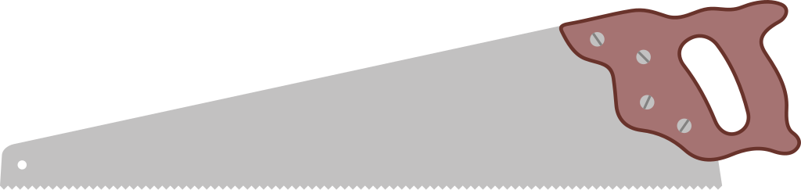

Eye protection
Protects against chips but does not replace correct guarding and control.
Industrial Technology – Timber
Weeks 5–6 guided learning

Module presentation
Use the presentation to preview How the bandsaw cuts—and why setup matters, Planning curved cuts, relief cuts and paired components, A bandsaw SOP from pre-start to shutdown before working through the theory, videos, checks and written evidence.
Two-week roadmap
Explain how the bandsaw cuts, plan controlled curved cuts, follow a machine SOP and refine joinery without creating loose or damaged components.
Your work
Your entries save automatically in this browser. Use Print / Save PDF before leaving the page.
Theory 1

A bandsaw uses a continuous toothed blade running around two wheels. It is well suited to curved profiles because only a narrow section of blade passes through the table, but that exposed section must be controlled carefully.
The upper guide and guard assembly supports the blade close to the work. It should be set just high enough to clear the timber. Raising it much higher exposes unnecessary blade length and allows greater sideways deflection. The table supports the workpiece, so the component must remain flat unless an approved jig is being used.
Blade width affects turning ability. A narrow blade can follow a tighter radius; a wider blade is normally more stable for straighter cuts. Blade selection, tension and tracking are teacher responsibilities. The student’s responsibility is to complete the machine-specific pre-start checks, identify abnormal conditions and avoid operating a machine that appears damaged or incorrectly set.
Theory 2

A radius should be marked from a template, compass construction or another approved method. The waste is removed while leaving the finished line visible. Cutting on the line leaves no allowance for refining saw marks; cutting inside it creates an undersize component that cannot be repaired by sanding.
Relief cuts are short cuts made through waste material towards the curved line. They divide a large offcut into smaller sections so it can fall away as the main curve is cut. Relief cuts are useful where the waste would otherwise trap the blade or force an excessively sharp turn. They must stop short of the finished line.
The work is turned gradually while remaining flat on the table. The blade should cut forward through the timber rather than being twisted sideways inside the kerf. If the curve is too tight for the fitted blade, the correct response is to stop and seek another method—not force the blade around the radius.
Open component drawingUse the stated R32 and R16 radii; never estimate the curve from the image.
Confirm face-side marks, left/right orientation and which edges will be visible in the assembled chair.
Use the stated radius or an approved template; mark the waste clearly.
Keep both hands out of the blade line and avoid reaching across the cut.
Remove bulk waste with a controlled feed and refine the last small amount later.
Place matching parts together and check the radius, length and transition into the straight edge.
Protects against chips but does not replace correct guarding and control.

Confirm square shoulders and reliable reference edges before further machining.

Not every removal task belongs on the bandsaw; use the safest suitable tool.

Hold the component safely for hand-tool and abrasive correction.
Theory 3
A Standard Operating Procedure (SOP) sets out the expected checks and behaviours for one machine or process. It reduces variation between operators and provides a common response when conditions change. The teacher’s machine-specific SOP always takes priority over general advice.
| Stage | What the operator checks or does | Why it matters |
|---|---|---|
| Before starting | Authorisation, PPE, clear floor, extraction, guard position, visible blade condition, marked waste and planned cut. | Prevents an avoidable fault from being discovered after the blade is moving. |
| During the cut | Timber flat, balanced hand positions, steady feed, eyes looking ahead along the line, no fingers in the blade path. | Supports control, surface quality and safe body position. |
| If conditions change | Stop feeding, switch off as directed, wait for the blade to stop and seek teacher assistance. | Prevents a minor stall, vibration or movement problem becoming an injury. |
| After the cut | Switch off, remain at the machine until stopped, remove waste by the approved method, clean and report faults. | Protects the next user and ensures defects are not hidden. |
Gloves are generally not worn near moving woodworking machinery because loose or grippy material can become an entanglement hazard and reduce feel. Long hair, jewellery and loose clothing must be secured. Hearing protection requirements depend on the machine and school procedure; eye protection remains essential.
Theory 4

A test fit is a diagnostic check. A joint that starts crooked may have unequal tenon cheeks, an out-of-square shoulder or a mortise that is not aligned with the reference face. A joint that stops part-way may have one local high spot rather than being uniformly too large.
Use light pencil marks, witness marks from the fit, a straightedge and careful measurement to identify the actual contact area. Remove a very small amount from the verified high spot with the approved hand tool, then test again. Randomly sanding every surface can round the tenon, reduce long-grain contact and turn a correctable tight fit into a loose one.
The desired fit closes under firm hand pressure, remains aligned and shows full shoulder contact. A heavy hammer can split the mortised component or hide a dimensional error. Glue should not be used as a lubricant for a joint that has not passed a dry fit.

A stiff-backed saw supports accurate, repeatable joinery cuts.

Use a sharp, supported chisel only with approved technique and direction.

A mallet may be appropriate for controlled chisel work—not for driving a poor test fit home.

Small checks prevent several adjustments combining into an undersize tenon.
Theory 5
A quality gate is a checkpoint that must be passed before the component moves to the next process. It is cheaper and easier to correct a radius before drilling than after a pivot hole has been located from the wrong end. Small inaccuracies that appear harmless can combine into a larger mechanism fault.
| Quality gate | Evidence required before continuing | Likely consequence if ignored |
|---|---|---|
| Before bandsawing | Correct component, orientation, template, waste side and safe cut plan. | Wrong-handed or undersize component. |
| After bandsawing | Line still visible, no burn or split, curve smooth enough to refine. | Excessive sanding or loss of dimension. |
| After refinement | Paired profiles match and transition smoothly into the straight edge. | Asymmetrical frame and misaligned later features. |
| Before drilling | Final length, shape, face-side marks and left/right labels confirmed. | Correct hole placed in the wrong component or location. |
Guided practice
Each incorrect option explains the misunderstanding. Use the hint, return to the theory and keep trying until the question is mastered.
Apply your learning
Write a genuine first attempt, check the live guidance, compare with the appropriate response example and improve your explanation before self-assessing.
Finish the two-week block
Your answers save in this browser as you work, but browser storage is not the official submission. Save the completed page as a PDF before closing it.
No marks, answers or personal information are sent from this webpage.